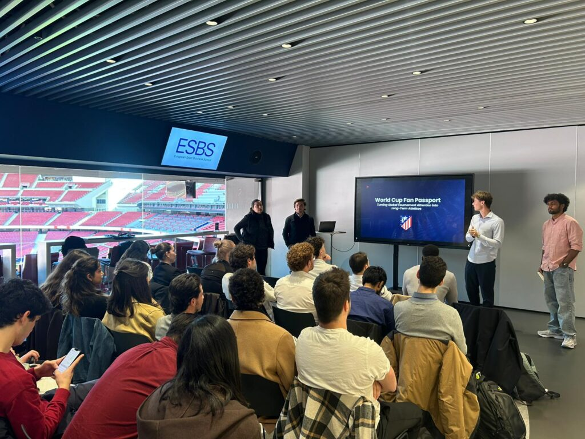

In February 2026, our team of five stood inside the Riyadh Air Metropolitano and presented a strategic fan engagement proposal to Atlético de Madrid's innovation department. We had spent weeks building the concept, stress-testing the numbers, and rehearsing the delivery. This is the story of what we proposed and what we learned.
The problem we identified
Football clubs are brilliant at the 90 minutes. The chants, the atmosphere, the matchday ritual. But what happens the other 350 days? For Atlético's approximately 90,000 international members, the connection often goes dormant between matches. We saw an opportunity to change that.
Our proposal: the Context Engine
We proposed a Context Engine — a privacy-first intelligence layer that sits on top of Atlético's existing systems and orchestrates personalised fan experiences. Rather than replacing what the club already had, it would connect the dots: location, engagement history, match schedule, event capacity — all processed in real time to deliver the right content to the right fan at the right moment.
What the proposal included
- Real-time fan context analysis across location, engagement history, and event capacity
- "Lifestyle Studios" as physical spaces in Madrid and international pop-up activations
- 2026 FIFA World Cup as a proving ground using ambient marketing strategies
- Revenue model projecting €3.33M Year 1 revenue against €1.3M investment
- Multi-jurisdictional privacy framework covering GDPR, CPRA, and Mexican data law

The feedback
"The most outstanding presentation in terms of research, benchmarking, market knowledge, and regulatory awareness."
Atlético de Madrid Innovation DepartmentThe innovation team challenged us to think beyond the existing member base — how could the engine attract new fans, not just retain current ones? It was a fair question and one that pushed our thinking further. The conversation that followed the formal pitch was, in many ways, more valuable than the presentation itself.
What I took away
This experience connected what I had been studying in the classroom with how decisions actually get made inside a major sports organisation. Presenting to professionals who live this every day forced a different level of rigour — not just in the data, but in how you frame an argument, anticipate pushback, and defend your assumptions on the spot.
It also clarified something about the direction I want to take: the intersection of technology, fan experience, and sports business is where I want to build my career.
Read the original article on ESBS →